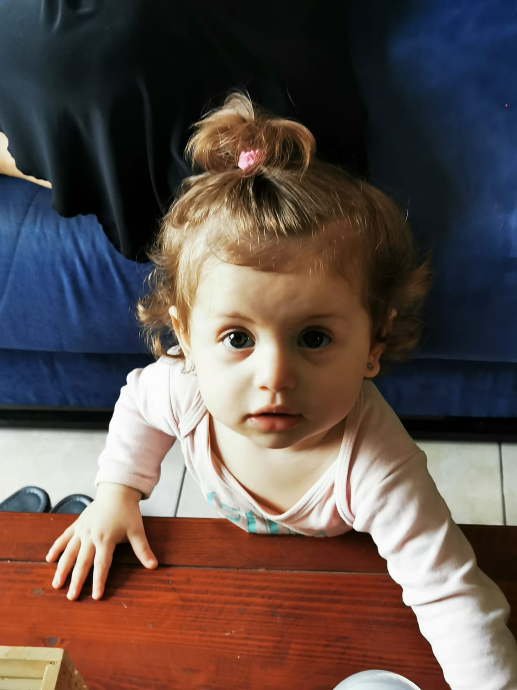
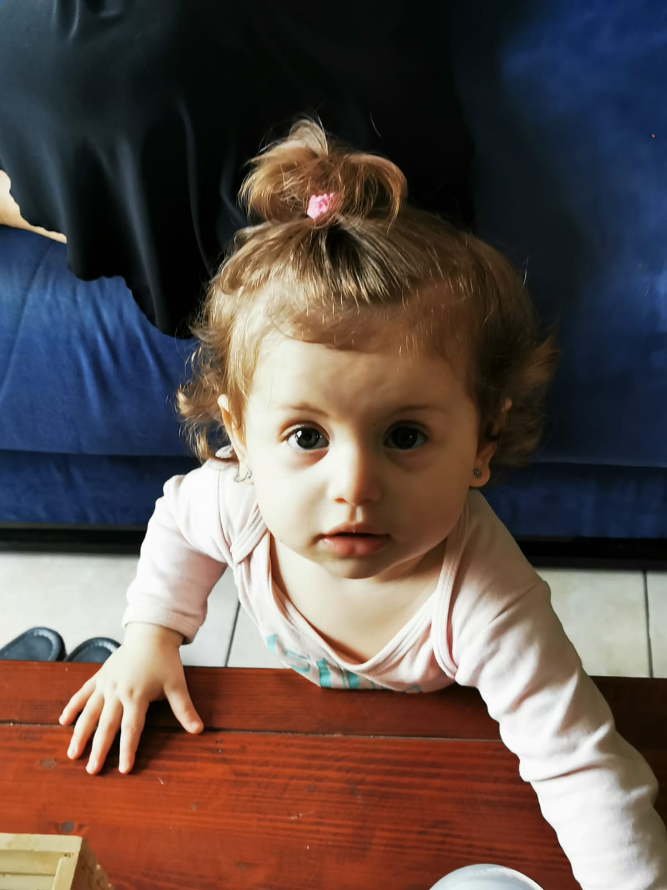

Why vacation with the children is so important:

Family vacations not only build life long memories, they also break your family away from the usual routine, opening your minds to new cultures, foods and experiences, and according to research they are even good for your health!
One study found that people return from vacation happier and more relaxed. No surprise there, but the study also found these same folk were more productive and had closer family relationships.
It’s obvious, but vacations are fun. Life at home is filled with responsibilities. For parents, there are jobs to do, clothes to wash, errands to run and responsibilities to be kept.
While on vacation, life can be filled with joy and worry free. That break from regular life can be a weekend camping trip or a weeklong stay in Europe. The key is to slow down and find your family’s joy.